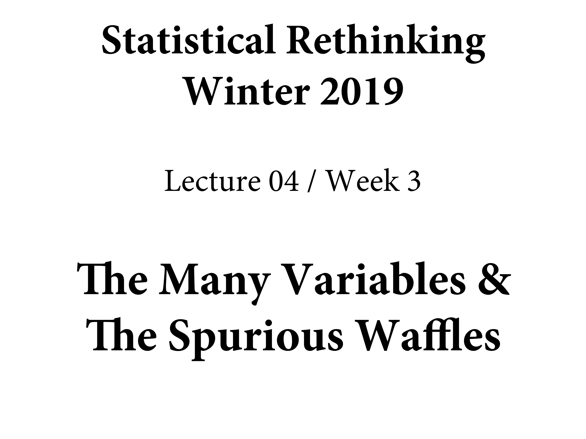
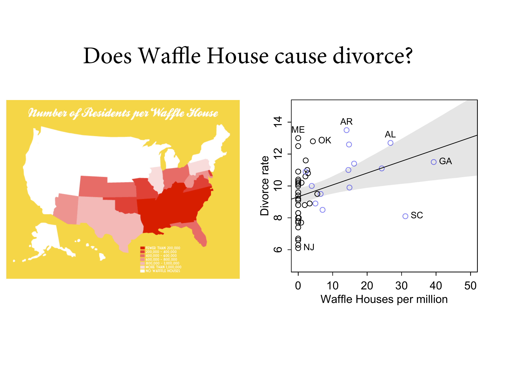
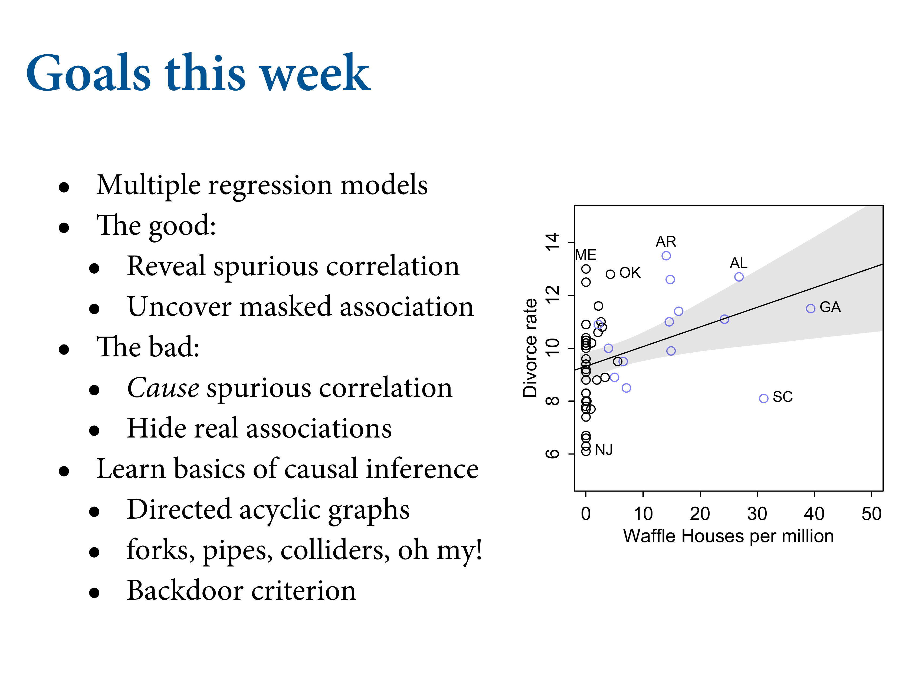
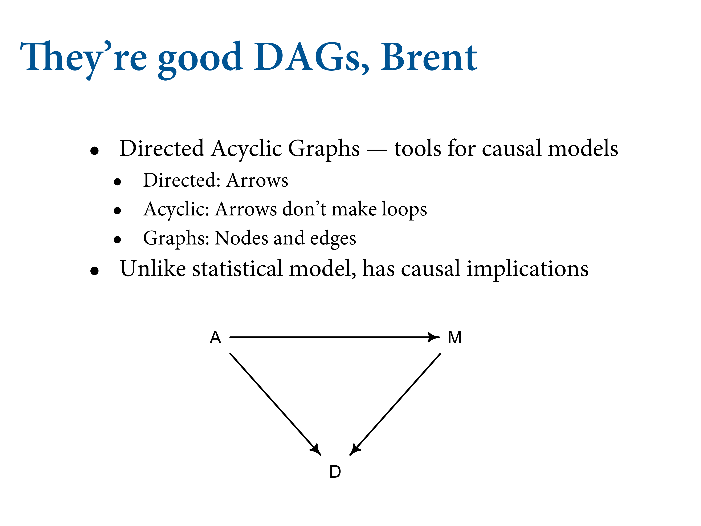
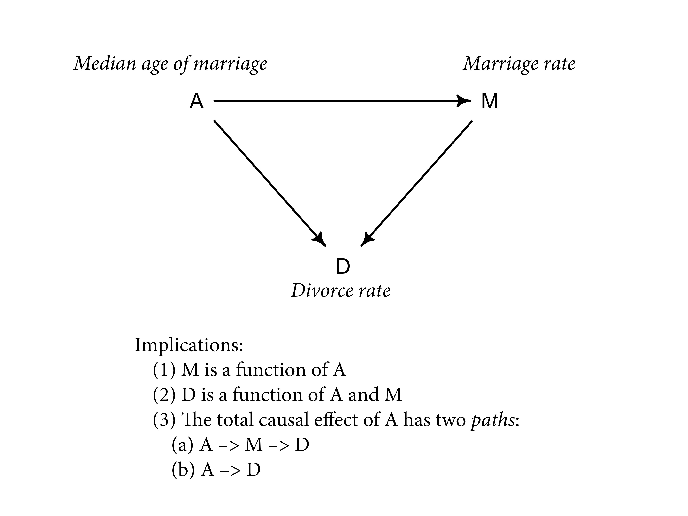
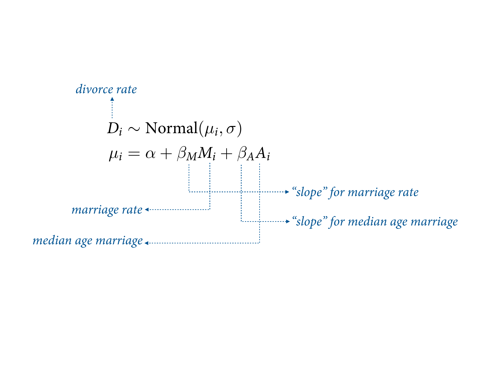
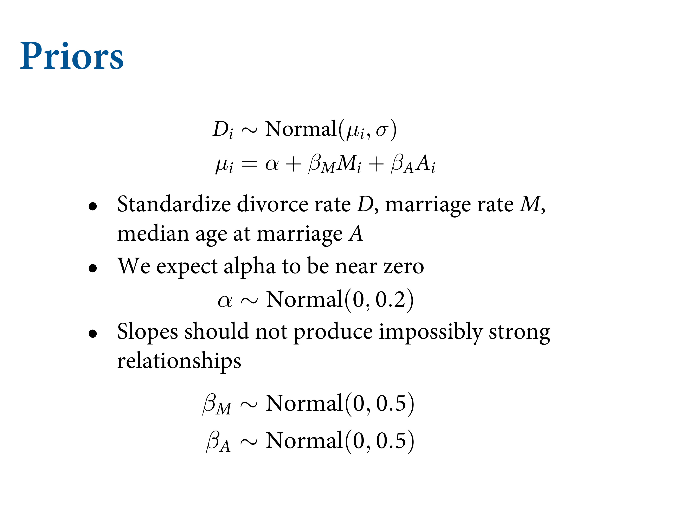
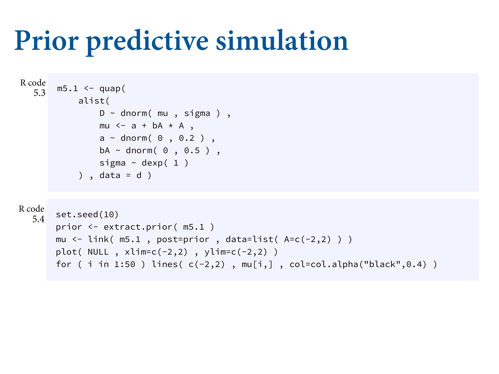
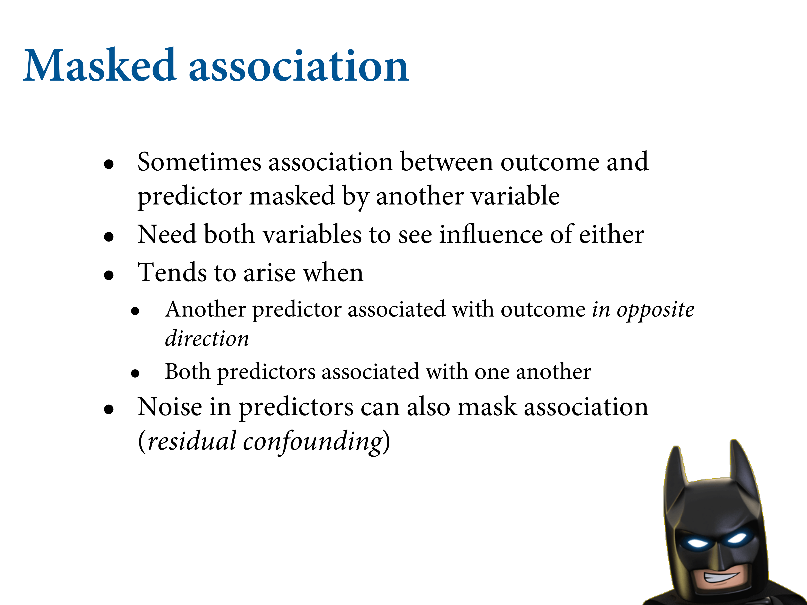
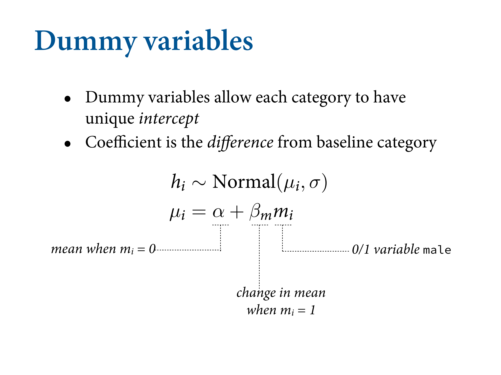

<!DOCTYPE html>
<html lang="" xml:lang="">
<head>

<meta charset="utf-8" />
<meta name="generator" content="pandoc" />
<meta name="viewport" content="width=device-width, initial-scale=1" />
<meta property="og:title" content="Chapter 5. The Many Variables &amp; The Spurious Waffles" />
<meta property="og:type" content="book" />


<meta name="date" content="2021-05-12" />

<script type="text/x-mathjax-config">
MathJax.Hub.Config({
  TeX: { equationNumbers: { autoNumber: "AMS" } }
});
</script>
  <script src="https://cdn.jsdelivr.net/npm/mathjax@3/es5/tex-chtml-full.js" type="text/javascript"></script>

<meta name="description" content="Chapter 5. The Many Variables &amp; The Spurious Waffles">

<title>Chapter 5. The Many Variables &amp; The Spurious Waffles</title>

<script src="libs/header-attrs-2.8/header-attrs.js"></script>
<link href="libs/tufte-css-2015.12.29/tufte-fonts.css" rel="stylesheet" />
<link href="libs/tufte-css-2015.12.29/tufte-background.css" rel="stylesheet" />
<link href="libs/tufte-css-2015.12.29/tufte-italics.css" rel="stylesheet" />
<link href="libs/tufte-css-2015.12.29/tufte.css" rel="stylesheet" />


<style type="text/css">code{white-space: pre;}</style>
<style type="text/css">
pre > code.sourceCode { white-space: pre; position: relative; }
pre > code.sourceCode > span { display: inline-block; line-height: 1.25; }
pre > code.sourceCode > span:empty { height: 1.2em; }
.sourceCode { overflow: visible; }
code.sourceCode > span { color: inherit; text-decoration: inherit; }
div.sourceCode { margin: 1em 0; }
pre.sourceCode { margin: 0; }
@media screen {
div.sourceCode { overflow: auto; }
}
@media print {
pre > code.sourceCode { white-space: pre-wrap; }
pre > code.sourceCode > span { text-indent: -5em; padding-left: 5em; }
}
pre.numberSource code
  { counter-reset: source-line 0; }
pre.numberSource code > span
  { position: relative; left: -4em; counter-increment: source-line; }
pre.numberSource code > span > a:first-child::before
  { content: counter(source-line);
    position: relative; left: -1em; text-align: right; vertical-align: baseline;
    border: none; display: inline-block;
    -webkit-touch-callout: none; -webkit-user-select: none;
    -khtml-user-select: none; -moz-user-select: none;
    -ms-user-select: none; user-select: none;
    padding: 0 4px; width: 4em;
    color: #aaaaaa;
  }
pre.numberSource { margin-left: 3em; border-left: 1px solid #aaaaaa;  padding-left: 4px; }
div.sourceCode
  {   }
@media screen {
pre > code.sourceCode > span > a:first-child::before { text-decoration: underline; }
}
code span.al { color: #ff0000; font-weight: bold; } /* Alert */
code span.an { color: #60a0b0; font-weight: bold; font-style: italic; } /* Annotation */
code span.at { color: #7d9029; } /* Attribute */
code span.bn { color: #40a070; } /* BaseN */
code span.bu { } /* BuiltIn */
code span.cf { color: #007020; font-weight: bold; } /* ControlFlow */
code span.ch { color: #4070a0; } /* Char */
code span.cn { color: #880000; } /* Constant */
code span.co { color: #60a0b0; font-style: italic; } /* Comment */
code span.cv { color: #60a0b0; font-weight: bold; font-style: italic; } /* CommentVar */
code span.do { color: #ba2121; font-style: italic; } /* Documentation */
code span.dt { color: #902000; } /* DataType */
code span.dv { color: #40a070; } /* DecVal */
code span.er { color: #ff0000; font-weight: bold; } /* Error */
code span.ex { } /* Extension */
code span.fl { color: #40a070; } /* Float */
code span.fu { color: #06287e; } /* Function */
code span.im { } /* Import */
code span.in { color: #60a0b0; font-weight: bold; font-style: italic; } /* Information */
code span.kw { color: #007020; font-weight: bold; } /* Keyword */
code span.op { color: #666666; } /* Operator */
code span.ot { color: #007020; } /* Other */
code span.pp { color: #bc7a00; } /* Preprocessor */
code span.sc { color: #4070a0; } /* SpecialChar */
code span.ss { color: #bb6688; } /* SpecialString */
code span.st { color: #4070a0; } /* String */
code span.va { color: #19177c; } /* Variable */
code span.vs { color: #4070a0; } /* VerbatimString */
code span.wa { color: #60a0b0; font-weight: bold; font-style: italic; } /* Warning */
</style>


<link rel="stylesheet" href="toc.css" type="text/css" />

</head>

<body>


<div class="row">
<div class="col-sm-12">
<div id="TOC">
<ul>
<li><a href="#the-many-variables-the-spurious-waffles"><span class="toc-section-number">1</span> The Many Variables &amp; The Spurious Waffles</a></li>
</ul>
</div>
</div>
</div>
<div class="row">
<div class="col-sm-12">
<div id="header">
<h1 class="title">Chapter 5. The Many Variables &amp; The Spurious Waffles</h1>
<h4 class="date"><em>2021-05-12</em></h4>
</div>
<div id="the-many-variables-the-spurious-waffles" class="section level1" number="1">
<h1><span class="header-section-number">Chapter 1</span> The Many Variables &amp; The Spurious Waffles</h1>
<div class="sourceCode" id="cb1"><pre class="sourceCode r"><code class="sourceCode r"><span id="cb1-1"><a href="#cb1-1" aria-hidden="true" tabindex="-1"></a><span class="fu">library</span>(here)</span>
<span id="cb1-2"><a href="#cb1-2" aria-hidden="true" tabindex="-1"></a><span class="fu">source</span>(here<span class="sc">::</span><span class="fu">here</span>(<span class="st">&quot;code/scripts/source.R&quot;</span>))</span></code></pre></div>
<div class="sourceCode" id="cb2"><pre class="sourceCode r"><code class="sourceCode r"><span id="cb2-1"><a href="#cb2-1" aria-hidden="true" tabindex="-1"></a>slides_dir <span class="ot">=</span> here<span class="sc">::</span><span class="fu">here</span>(<span class="st">&quot;docs/slides/L05&quot;</span>)</span></code></pre></div>
<p></p>
<div class="figure"><span id="fig:unnamed-chunk-4"></span>
<p class="caption marginnote shownote">
Figure 1.1: Went to College in Atlanta. Has Waffle Houses. Always open. Sometimes there are two Waffle Houses. Other things in the South include Hurricanes.
</p>

</div>
<div class="figure"><span id="fig:unnamed-chunk-5"></span>
<p class="caption marginnote shownote">
Figure 1.2: Because Waffle House is in the South, they invest in disaster preparedness, and even during a storm they stay open.
</p>

</div>
<div class="figure"><span id="fig:unnamed-chunk-6"></span>
<p class="caption marginnote shownote">
Figure 1.3: They even have a Waffle House index. If it’s closed, it’s a really bad storm. FEMA uses the index internally at FEMA.
</p>

</div>
<div class="figure"><span id="fig:unnamed-chunk-7"></span>
<p class="caption marginnote shownote">
Figure 1.4: There are other things in the South. They have the highest divorce rates in the South. This sets up spurious correlations with anything in the South. So does Waffle House cause divorce? But in regression it’s quite robust. Statistically, it’s quite hard to get rid of it. But nature is full of stuff like this.
</p>

</div>
<div class="figure"><span id="fig:unnamed-chunk-8"></span>
<p class="caption marginnote shownote">
Figure 1.5: Correlation is commonplace. Great example of the divorce rate in Maine with the per capita consumption of margarine. Lot’s of things will cause a high correlation between variables, even if they have to relation.
</p>

</div>
<div class="figure"><span id="fig:unnamed-chunk-9"></span>
<p class="caption marginnote shownote">
Figure 1.6: Have the goal of both building it up and breaking it down. Can remove spurious correlations, and uncover masked associations you wouldn’t see otheriwse. But adding variables can cause as much harm as good. You can actually hide associations as well. So you need a broader structure to think about this.
</p>

</div>
<p><label for="tufte-mn-1" class="margin-toggle">⊕</label><input type="checkbox" id="tufte-mn-1" class="margin-toggle"><span class="marginnote"><span style="display: block;">Making decisions between good and bad will mean forming a framework to make them. The goal is to learn the back-door criterion.</span></span></p>
<div class="figure"><span id="fig:unnamed-chunk-11"></span>
<p class="caption marginnote shownote">
Figure 1.7: Waffle House doesn’t cause divorce, but something does. The South is more religious. Lot’s of things that are correlated with divorce rate. Marriage rate? Can’t get divorce if you haven’t been married, but could also be spurious. Might indicate that it’s a society that views things favourably.
</p>

</div>
<div class="figure"><span id="fig:unnamed-chunk-12"></span>
<p class="caption marginnote shownote">
Figure 1.8: Another variable - median age at marriage, could also be causal. Which could it be? We want to now put both in the same model, which reveals that one of these is an imposter.
</p>

</div>
<div class="figure"><span id="fig:unnamed-chunk-13"></span>
<p class="caption marginnote shownote">
Figure 1.9: This is what multiple regression is for. We’ve got two questions in a model that has both questions. Do you get any predictive information from the second variable?
</p>

</div>
<div class="figure"><span id="fig:unnamed-chunk-14"></span>
<p class="caption marginnote shownote">
Figure 1.10: The arrows have directions to them; can be bidirectional. They’re acyclic, so they don’t loop. They’re called graphs because they have nodes and edges. The associations are Bayesian networks, but they don’t have interactions.
</p>

</div>
<div class="figure"><span id="fig:unnamed-chunk-15"></span>
<p class="caption marginnote shownote">
Figure 1.11: We have here a plausible graph. How does A affect M? If the young are getting married too, then more people are getting married. Median age of marriage influences divorce rate because possibly young people make worse decisions. Is the arrow from M to D there? We want to tell the difference between A and D, and M and D. <strong>NOTE</strong>: when you’re walking along the path, you can walk backwards along a path.
</p>

</div>
<div class="figure"><span id="fig:unnamed-chunk-16"></span>
<p class="caption marginnote shownote">
Figure 1.12: We want to tell the difference between these two things. Something causes waffle house, and something causes divorce. That thing is the South, and so they end up being correlated even though there’s no causal relationship.
</p>

</div>
<p><label for="tufte-mn-2" class="margin-toggle">⊕</label><input type="checkbox" id="tufte-mn-2" class="margin-toggle"><span class="marginnote"><span style="display: block;"><code>|</code> means “conditional on”.</span></span></p>
<div class="figure"><span id="fig:unnamed-chunk-18"></span>
<p class="caption marginnote shownote">
Figure 1.13: Already know how to do these, just need to do extra stuff. Linear regression is a special type of Bayesian network where there’s an outcome variable, which is assigned Gaussian probability with some mean that is conditional based on some variable, and a standard deviation. The <code>i</code>s are states. Have some intercepts.
</p>

</div>
<div class="figure"><span id="fig:unnamed-chunk-19"></span>
<p class="caption marginnote shownote">
Figure 1.14: Have to think harder about priors now. It help a lot by standardising the priors - converting them into Z-scores. If you make all your variables z-scores, you make you life easier. (But not in all cases.)
</p>

</div>
<p><label for="tufte-mn-3" class="margin-toggle">⊕</label><input type="checkbox" id="tufte-mn-3" class="margin-toggle"><span class="marginnote"><span style="display: block;">When you standardise your predictors, you’re setting your mean as 0. The regression line has to go through 0, and so alpha should be 0, We’ll give it a Gaussian prior with a tight SD. Maybe should even be tighter.</span>
<span style="display: block;">Slopes are a little harder. You don’t want to use flat priors because you don’t want it to think wildly impossible slopes are possible to start. That’s why we do some prior predictive simulation.</span></span></p>
<div class="figure"><span id="fig:unnamed-chunk-21"></span>
<p class="caption marginnote shownote">
Figure 1.15: You can fit your model. You can run that model. <code>extract.prior</code> samples from the prior to simulate. Then pass it to <code>link</code> to create predictions based on the prior. Then you can plot the regression lines.
</p>

</div>
<div class="figure"><span id="fig:unnamed-chunk-22"></span>
<p class="caption marginnote shownote">
Figure 1.16: This is 50 regression lines from the prior. Standardised deviation of marriage. 2 SD is almost all. If your model thinks a possible divorce rate is outside the observable range of divorce rates, then they’re bad. This prior allows really strong relationships. Allows it to govern nearly all the variation in divorce rate. But we’ll move forward with this. This is the flattest prior you could justify scientifically. Priors by frequentists consider even crazier priors, just as vertical lines.
</p>

</div>
<p></p>
<p><label for="tufte-mn-4" class="margin-toggle">⊕</label><input type="checkbox" id="tufte-mn-4" class="margin-toggle"><span class="marginnote"><span style="display: block;">Linear means additive, so the model makes a plane. You keep adding them together. There are four parameters. <span class="math inline"><span class="math inline">\(\alpha\)</span></span>, two slopes <span class="math inline"><span class="math inline">\(\beta_1\)</span></span> and <span class="math inline"><span class="math inline">\(\beta_2\)</span></span>, adn the standard deviation <span class="math inline"><span class="math inline">\(\sigma\)</span></span>.</span></span></p>
<p></p>
<p><label for="tufte-mn-5" class="margin-toggle">⊕</label><input type="checkbox" id="tufte-mn-5" class="margin-toggle"><span class="marginnote"><span style="display: block;">Here’s the quap code, and we get a table of coefficients. Look for the mean, and as I promised, <span class="math inline"><span class="math inline">\(\alpha\)</span></span> is 0. `<code>bM</code> is about twice the size of the posterior value itself. No consistent relationship. Age of marriage however, is -.6, but now the posterior mass is entirely below 0. What’s the lesson here? There’s probably no causal relationship between marriage rate and divorce, and that’s because it was confounded by age of marriage.</span></span></p>
<div class="figure"><span id="fig:unnamed-chunk-27"></span>
<p class="caption marginnote shownote">
Figure 1.17: This shows all three models. Bottom is age of marriage only. The one with marriage rates in the middle. Then marriage rate and and age of marriage in the bottom.
</p>

</div>
<div class="figure"><span id="fig:unnamed-chunk-28"></span>
<p class="caption marginnote shownote">
Figure 1.18: This is the graph. Once you know the median age of marriage, you get little extra information in marriage. But when you ad A, it does give you information. If you just wanted to make a prediction, M is useful, but if you wanted to change D, you need to change other things like A.
</p>

</div>
<p><label for="tufte-mn-6" class="margin-toggle">⊕</label><input type="checkbox" id="tufte-mn-6" class="margin-toggle"><span class="marginnote"><span style="display: block;">You have to be clear about whether you’re interesting in predicting things, or understanding the true nature of things.</span></span></p>
<div class="figure"><span id="fig:unnamed-chunk-30"></span>
<p class="caption marginnote shownote">
Figure 1.19: How do we visualise models like this? Lots of ways. Usually the most useful way to visualise depends on the model. You want to think about what you’re trying to communicate. The first are predictor residual plots, not that you need to do them, but good for understanding how these linear regressions works.
</p>

</div>
<div class="figure"><span id="fig:unnamed-chunk-31"></span>
<p class="caption marginnote shownote">
Figure 1.20: Purpose is to show how the association looks, having controlled for the other predictors. We want to calculate the intermediate states. Great for intuition but terrible for analysis. Never any statistical justification for running regression over residuals. Why? Gives you the wrong answer, because it gives you bias estimates. What to do instead? Multiple regressions.
</p>

</div>
<label for="tufte-mn-7" class="margin-toggle">⊕</label><input type="checkbox" id="tufte-mn-7" class="margin-toggle"><span class="marginnote"><span style="display: block;">Recipe:</span>
<ol style="list-style-type: decimal">
<li>
Regress a predictor, and find the extra variance left over, and look at the pattern of the relationship between the residuals and the outcome.
</li>
</ol>
<p></span></p>
<div class="figure"><span id="fig:unnamed-chunk-33"></span>
<p class="caption marginnote shownote">
Figure 1.21: Here’s our first residual plot
</p>

</div>
<div class="figure"><span id="fig:unnamed-chunk-34"></span>
<p class="caption marginnote shownote">
Figure 1.22: What are we looking at here? Marriage rate, standardised. THe distance from the regression line - the expected value of M conditional on A, is the residual. THe unexplained bit from the model. Highlighted some states with high residuals. Now we’ll take the absolute distances for each point.
</p>

</div>
<div class="figure"><span id="fig:unnamed-chunk-35"></span>
<p class="caption marginnote shownote">
Figure 1.23: Now take those residuals, and look at the correlation between the residuals of M and D. And you can see nothing. Shows you what the model is doing inside. If you do the multiple regresssion all at once, it handles all of that. If you do it this way you don’t. But really good for intuition. Point of Maine with a really high divorce rate.
</p>

</div>
<div class="figure"><span id="fig:unnamed-chunk-36"></span>
<p class="caption marginnote shownote">
Figure 1.24: Still no explanation about why ME is so high. Now you can pivot A on M.
</p>

</div>
<div class="figure"><span id="fig:unnamed-chunk-37"></span>
<p class="caption marginnote shownote">
Figure 1.25: Then put those on the plot on the bottom. So now that you know M, there’s considerable information in also knowing A. But the reverse is not true.
</p>

</div>
<div class="figure"><span id="fig:unnamed-chunk-38"></span>
<p class="caption marginnote shownote">
Figure 1.26: This is one of the things we mean. In observational studies like this one, there’s no ethical intervention we can make. But we want to make causal information. Linear regression allows you to do that, but only if you have an idea of the causal relationship between the variables. To interpret, you need a causal framework. We’ll have an example latter when controlling can <em>create</em> a confound.
</p>

</div>
<p><label for="tufte-mn-8" class="margin-toggle">⊕</label><input type="checkbox" id="tufte-mn-8" class="margin-toggle"><span class="marginnote"><span style="display: block;">These models are not magic. You shouldn’t get cocky. This is the kind of study where you use average data. Quite a pathological dataset.</span></span></p>
<div class="figure"><span id="fig:unnamed-chunk-40"></span>
<p class="caption marginnote shownote">
Figure 1.27: Cases where you hold other predictor variables constant. All the code for generating them is in the text. In the real world we can’t do that. If we’re right in our DAG here, and we manipulate A, you’ll also manipulate M as well.
</p>

</div>
<p></p>
<p>Goals:
1. Figure out whether the approximation of the posterior works. Compare the predictions with the raw data. If they’re different, they fail.
2. It can inspire you to look at the cases that don’t fit well, and figure out what you need to make better causal inferences.</p>
<div class="figure"><span id="fig:unnamed-chunk-42"></span>
<p class="caption marginnote shownote">
Figure 1.28: Diagonal is unity - perfect prediction. But there are states where they’re making bad predictions, like ID. Has a very low D. That’s why there’s a mismatch. It’s getting it really wrong. Why? The Mormons. They have a very low divorce rate. UT as well.
</p>

</div>
<div class="figure"><span id="fig:unnamed-chunk-43"></span>
<p class="caption marginnote shownote">
Figure 1.29: Another good thing regression can do is reveal spurious correlations. When there are two predictors that both influence the outcome in different directions, you can get the total causal effect between the two. This tends to arise where you have two predictors, and they act in different directions, and cancel each other out, so if you don’t model both of them individually, it looks like they have no effect.
</p>

</div>
<p><label for="tufte-mn-9" class="margin-toggle">⊕</label><input type="checkbox" id="tufte-mn-9" class="margin-toggle"><span class="marginnote"><span style="display: block;">Noise can also cause you not to see a relationship.</span></span></p>
<div class="figure"><span id="fig:unnamed-chunk-45"></span>
<p class="caption marginnote shownote">
Figure 1.30: Relationship between milk energy and how brainy they are? Intersted in things that are interested in what makes us unique. Primates are mammals, and some mammals have very highly energetic milk, like seals basically ooze butter. Primates in contrast carry their offspring on them. As a consequence, the energy density is lower. Human milk is not energetically rich. 75% of our brain mass is neocortex. Then the brainiest primate is <em>Cebus</em>. Can we see a signal of selection on milk energy from braininess?
</p>

</div>
<div class="figure"><span id="fig:unnamed-chunk-46"></span>
<p class="caption marginnote shownote">
Figure 1.31: Sample of primate species. Pairs plot. Particularly strong correlation between the magnitude of body mass (log(mass)) is strongly correlated with neocortex. No particular strong relationship between <code>log(mass)</code> and <code>kcal.per.g</code>.
</p>

</div>
<div class="figure"><span id="fig:unnamed-chunk-47"></span>
<p class="caption marginnote shownote">
Figure 1.32: We need to do some prior predictive simulation. Left is not a good prior. All we need to do to get the regression lines to live in the outcome space, we can contract <span class="math inline">\(lpha\)</span> - should be about 0, and the slope should be about 0.5 to be tighter. If you standardise the predictor and outcome, Normal(0, 0.5) should keep you in the outcome space.
</p>

</div>
<div class="figure"><span id="fig:unnamed-chunk-48"></span>
<p class="caption marginnote shownote">
Figure 1.33: There’s a slight relationship between brain and milk energy, and a slightly negative relationship with body mass. Look what happens when you include both in a model.
</p>

</div>
<div class="figure"><span id="fig:unnamed-chunk-49"></span>
<p class="caption marginnote shownote">
Figure 1.34: Now very strong relationship between both.
</p>

</div>
<div class="figure"><span id="fig:unnamed-chunk-50"></span>
<p class="caption marginnote shownote">
Figure 1.35: You can see strong relationships, but only when they’re both present in the model. This is the masking effect. One is positively related to the outcome, the other is negatively related to the outcome, and they’re correlated with one another. Bigger primates need bigger brains, bigger brains need more energy, bigger bodies need less because they’re are longer developmental times. THey’re antagonistic effects, but correlated in same species. This sort of effect can happen a lot.
</p>

</div>
<div class="figure"><span id="fig:unnamed-chunk-51"></span>
<p class="caption marginnote shownote">
Figure 1.36: Fake data that causes this relationship. <code>U</code> is unobserved, some life history variable. Then the causal influence on each of those. This relationship is sufficient to create what we saw.
</p>

</div>
<div class="figure"><span id="fig:unnamed-chunk-52"></span>
<p class="caption marginnote shownote">
Figure 1.37: Often we have data that represents discrete categories. Want to include those, but they’re not continuous. Useful variables because the mean varies, but can’t add them as they are
</p>

</div>
<p><label for="tufte-mn-10" class="margin-toggle">⊕</label><input type="checkbox" id="tufte-mn-10" class="margin-toggle"><span class="marginnote"><span style="display: block;">First is to create a dummy, and the next is almost always superior, and that’s the index.</span></span></p>
<div class="figure"><span id="fig:unnamed-chunk-54"></span>
<p class="caption marginnote shownote">
Figure 1.38: Take a categorical variable and convert them to indicator variables. They stand in for something. e.g. Kalahari height data, <code>0</code> means not <code>male</code>.
</p>

</div>
<div class="figure"><span id="fig:unnamed-chunk-55"></span>
<p class="caption marginnote shownote">
Figure 1.39: Height varies by sex, so you could include it in the model. The linear model looks like a continuous predictor, because you’ve coded it as 0 and 1, if effectively turns the parameter off and on, and adjusts the mean. Effectively makes two intercepts, one male, one female. <code>alpha</code> is the intercept for females, and <code>alpha + betaM</code> is the intercept for males.
</p>

</div>
<div class="figure"><span id="fig:unnamed-chunk-56"></span>
<p class="caption marginnote shownote">
Figure 1.40: Have to pick same number of priors for number of categories. Consequence is you end up assuming that one of the categories is less certain than all the others.
</p>

</div>
<div class="figure"><span id="fig:unnamed-chunk-57"></span>
<p class="caption marginnote shownote">
Figure 1.41: This is the better option.
</p>

</div>
<hr />
<div class="sourceCode" id="cb3"><pre class="sourceCode r"><code class="sourceCode r"><span id="cb3-1"><a href="#cb3-1" aria-hidden="true" tabindex="-1"></a>slides_dir <span class="ot">=</span> here<span class="sc">::</span><span class="fu">here</span>(<span class="st">&quot;docs/slides/L06&quot;</span>)</span></code></pre></div>
<p></p>
<div class="figure"><span id="fig:unnamed-chunk-60"></span>
<p class="caption marginnote shownote">
Figure 1.42: Pick up where we left off. How to include un-ordered categorical data in a regression? A lot of downsides for using dummy variables. Index variables have a lot of advantages, including that you can assign the same priors to each of the categories. Another reason is that when you get more and more categories, you don’t have to change anything other than include more numbers in the index. Grows really nicely, and is the foundation of multi-level models.
</p>

</div>
<div class="figure"><span id="fig:unnamed-chunk-61"></span>
<p class="caption marginnote shownote">
Figure 1.43: Can code this in <code>quap</code>. The bracket notation means <code>a</code> for each <code>sex</code>. Now you see you get an alpha for each sex. The awkwardness is you need to make inferences.
</p>

</div>
<div class="figure"><span id="fig:unnamed-chunk-62"></span>
<p class="caption marginnote shownote">
Figure 1.44: If you want the posterior distribution for the sexes, you extract samples from the posterior. Then compute the difference by subtracting the difference from each sample. Still it in a column called <code>diff_fm</code>. Posterior mean is -8. All the comparisons are already in the posterior, you just have to extract samples to compute them. We’ll be using this kind of coding in future examples.
</p>

</div>
</div>
<p style="text-align: center;">
</p>
</div>
</div>


</body>
</html>
